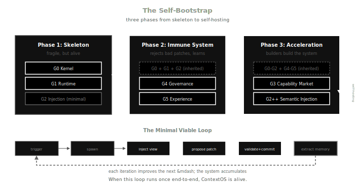

← Part I: The Paradigm Flip | Part II: The Context Protocol | Part III: The Bootstrap Spiral
Part I argued that compensatory structures evaporate when agents replace humans on the main execution path. Part II argued that context infrastructure fills the vacuum — the protocol that lets agents accumulate intelligence across sessions. Part III argued that agents use that infrastructure to bootstrap recursively, coordinating through the substrate and grounded by test suites.
But the substrate was always an abstraction. "The context protocol." "The shared state." "The ground under the spiral." Words pointing at something that didn't exist yet.
This piece makes it concrete. The substrate is a kernel — a versioned, governed, replayable state engine where context is the primary citizen and agents are ephemeral compute. The kernel doesn't just serve agents. It is itself managed by agents, versioned in its own DAG, bootstrapped through its own governance. The recursion is not a metaphor. It's the architecture.
From Protocol to Substrate
Part II described four operations: publish, query, subscribe, invalidate. These are the verbs. But verbs need a noun — a thing they operate on. What is the data structure underneath?
Not a database. Not a document store. Not a key-value cache. The substrate is a versioned context graph: nodes representing beliefs, goals, skills, traces, and memories; edges representing justification, decomposition, causal reference, and ownership. Every mutation to this graph follows a single path: an agent proposes a patch, governance validates it, the kernel commits it to an append-only DAG.
This is the same relationship Git has to the filesystem. The filesystem stores blobs. Git gives them branching, merging, history, and distributed collaboration. Postgres stores rows. The kernel gives them versioning, governance, deterministic replay, and semantic structure.
The kernel is the noun that makes the protocol's verbs meaningful.
Context Is a Graph
Part II argued that context has three properties databases can't handle: relevance is not a predicate, context has provenance and decay, and context is heterogeneous. The graph model addresses all three.
Relevance becomes structural. When an agent needs context for a task, the system computes a k-hop closure around the focus node — every node reachable within k edges. A goal node connects to its sub-goals, which connect to the agent runs that attempted them, which connect to the memories those runs produced. The relevant context for "continue this goal" isn't a SQL query. It's a subgraph.
Provenance is an edge. Every belief node has justification edges pointing to its evidence. Every trace node has causal edges pointing to the nodes that triggered the action. Provenance isn't metadata — it's first-class graph structure. When a justification is invalidated, the beliefs it supports are automatically suspended. This is a Truth Maintenance System, not a garbage collector.
Heterogeneity is handled by typed nodes. Goals, beliefs, skills, traces, memories, agents — each has a schema. The graph accommodates all of them in a single queryable surface. A goal can have an edge to a belief, which has an edge to a trace, which has an edge to a memory. No foreign key gymnastics. No multi-table joins. Just edges.
The graph is append-only at the commit level. Agents never mutate it directly. They propose patches — collections of operations (AddNode, UpdateNode, AddEdge, RemoveEdge) — and the kernel either commits or rejects them. Every committed state is a snapshot. Every snapshot is reproducible. Checkout any commit, get the exact graph that existed at that point. Same commit, same view, same decisions.
The Governance Gate
Part III said "tests as governance." This section makes it load-bearing.
Between the agent's proposal and the kernel's commit sits the governance gate — a validation layer that enforces invariants before any mutation reaches the graph. The protocol is two-phase:
- Agent calls
propose_patch(operations, causal_refs) - Governance validates: schema check, invariant enforcement, conflict detection
- If valid: kernel commits to DAG
- If conflict: kernel creates a resolution node — a first-class record that a conflict occurred and how it was resolved
The gate enforces a minimum set of invariants. These are not suggestions. They are load-bearing walls. Remove any one and the system collapses from "autonomous" to "hallucinating":
No direct write. Agents can only propose. The kernel commits. This is separation of concerns applied to mutation: the entity that generates changes is not the entity that accepts them. Every commit has an audit trail.
Every belief needs justification. A belief node without justification edges is an orphan assertion — no better than a hallucination. The governance gate rejects any belief that arrives unjustified. This is the immune system against confabulation.
No orphan goals. Every goal must have an owner — an agent role or a human principal. Ownerless goals are zombie processes. They consume attention without accountability.
Every skill invocation is traced. When an agent invokes a skill, it must produce a trace node recording the input hash, output hash, and duration. Without traces, the system cannot audit, replay, or learn from its own actions.
Every running agent has an active lease. Agents must renew their heartbeat within a lease window. If an agent fails silently — no crash report, no patch, no completion signal — the lease expires and the scheduler evicts it. No zombie processes.
Five invariants. Five load-bearing walls. They don't make the system intelligent. They make the system non-delusional.
Belief revision follows from the justification invariant. The kernel maintains a dependency graph: belief B depends on justifications J1 and J2. If J1 is invalidated, B transitions to suspended. If B supported downstream beliefs, they cascade to suspended as well. Recomputation is incremental — only the affected subgraph, not the entire store. This is the same algorithm as incremental build systems: rebuild only what changed.
The Injection Contract
Part II described the context loop — inject before action, extract after. The injection side has a contract: the ContextView.
A ContextView is not "dump the whole graph into the prompt." It's a bounded, deterministic, role-scoped slice of the graph, constructed specifically for one agent's current task:
- Focus node — what the agent is working on
- Structural closure — k-hop neighbors of the focus
- Memory bundle — semantically relevant past experiences
- Skill manifest — capabilities the agent is allowed to invoke, filtered by role
- Invariants — rules the agent must not violate
- Budget — hard limits: max nodes, max tokens, max uncertainty
The view is frozen and hashed before delivery. This means: given the same commit and the same focus, two injections produce identical views. Deterministic injection enables deterministic replay. You can always answer: "what did this agent see when it made that decision?"
The build target is 20ms for a 10k-node graph. This is not a nice-to-have. If injection is slow, agents wait. If agents wait, the bootstrap spiral stalls. Fast injection is what makes the "always-on" live system from Part III possible.
The algorithm:
- Compute k-hop structural closure from focus node
- Rank semantic neighbors (vector index when available, structural distance as fallback)
- Enforce diversity constraint (prevent over-concentration on one subgraph)
- Attach skill manifest filtered by agent role
- Apply budget trimming (token budget, node budget, uncertainty ceiling)
- Freeze view, compute hash, record in trace
This is the bridge between Parts II and III. Part II said "inject relevant context before action." Part III said "agents build on each other's work." The ContextView is the mechanism: each agent sees a curated, traceable, deterministic window into the accumulated intelligence of every agent that came before.
The Self-Bootstrap
Here is the claim that separates ContextOS from a database with extra steps: the system uses its own substrate to manage its own development.
The root goals of the system — the things it needs to become — are stored as goal nodes in the context graph:
- G0: Persistent Kernel — store, version, replay
- G1: Agent Runtime — spawn, lease, evict, recover
- G2: Context Injection — build_view with budgets and determinism
- G3: Capability Market — skill registry, invocation tracing, role permissions
- G4: Governance — two-phase commit, invariants, conflict resolution
- G5: Experience Extraction — episodic memory, session distillation, injection feedback
Each goal decomposes into sub-goals. Each sub-goal is assigned to builder agents. Each builder agent proposes patches — new tables, new invariants, new API endpoints, new skill definitions — through the governance gate. The governance gate validates them. The kernel commits them. The version DAG records the system's own evolution.
This is self-hosting. GCC compiles GCC. Git tracks Git's repository. ContextOS governs its own development through its own governance engine. The system's backlog is its own context graph. The system's CI is its own governance gate. The system's commit history is its own version DAG.
But self-hosting requires a bootstrap sequence. You can't compile GCC with GCC before GCC exists. The bootstrap has three phases:
Phase 1: The Skeleton. Build G0 (kernel) + G1 (runtime) + minimal G2 (injection). This is enough to run one loop: spawn an agent, inject a view, collect a patch, commit. No governance yet — the skeleton trusts its builders. This is the embryonic stage. Fragile, but alive.
Phase 2: The Immune System. Add G4 (governance) + G5 (experience extraction). Now the system can reject bad patches and learn from its runs. Governance prevents pollution. Experience extraction closes the feedback loop. Every run makes the next run better. This is where the skeleton becomes an organism.
Phase 3: The Acceleration. Builder agents use the now-governed, experience-accumulating system to complete G3 (capability market) and enhance G2 (semantic retrieval, diversity constraints, budget optimization). Each enhancement is itself a patch through governance. The system's development is indistinguishable from its operation.
The acceptance criteria — not vibes, numbers:
- Closed-loop throughput: every run produces usable memory or patches, not noise
- Replayability: any commit can explain why the system looks the way it does now
- Pollution control: invalid patches are rejected before reaching the main line
When all three hold, the system is self-hosting. The bootstrap spiral is not a metaphor — it's an engineering artifact with a commit log.
The Minimal Viable Loop
Everything above is architecture. The question that matters is: what's the smallest thing that runs?
Not a feature list. A cycle:
Watcher triggers → spawn agent → inject view → agent produces patch → governance validates → kernel commits → experience extracted → influences next injection → loop
When this cycle runs end-to-end once, ContextOS is alive. Not complete. Not production-ready. Alive — in the specific sense that each iteration of the loop improves the conditions for the next iteration. The system accumulates. It doesn't reset.
Everything after the first loop is the loop running on itself. Builder agents are agents. Their patches go through governance. Their experiences get extracted. Their context views include memories from previous builder runs. The system that builds the system is the system.
左脚踩右脚直接升天. But this time the feet are real. The left foot is the kernel — versioned, append-only, replayable. The right foot is governance — invariant-enforced, conflict-aware, audit-trailed. The ground is still the test suite. Always the test suite.
What This Is Not
ContextOS is not a prompt framework. It doesn't template prompts or chain thoughts. It manages state.
It is not a memory wrapper. It doesn't bolt RAG onto a chat loop. It versions, governs, and replays structured context.
It is not an agent orchestration tool. It doesn't schedule meetings between chatbots. It provides the substrate on which any coordination model — orchestrated, stigmergic, evolutionary — can operate.
It is: a context-native operating system. Versioned state. Governed mutation. Ephemeral compute. Deterministic replay.
The relationship to today's agent tools is the relationship of an OS to a shell script. Both run programs. One has process isolation, memory management, a filesystem, and a scheduler. The other has bash -c.
The Ground
Part III ended: "the ground is the test suite."
Part IV adds a layer beneath. The test suite defines what is correct. The kernel provides the surface on which correctness is checked. Without the kernel, there is no versioned state to test against, no commit to replay, no governance gate to enforce. The test suite is the law. The kernel is the court.
Tests, agents, skills, memories, beliefs, goals — all are first-class citizens of the same state machine. Not separate systems bolted together. Not a memory module talking to a skill module talking to an agent module through message passing. One graph. One commit DAG. One governance gate.
The system that manages agents is managed by agents. The system that versions context is versioned as context. The system that governs mutation is itself governed by the same invariants.
The recursion is the architecture. And the ground holds.
References
- The New Engine: The Paradigm Flip — on compensatory structures and the paradigm flip
- The New Engine: The Context Protocol — on context infrastructure and the four operations
- The New Engine: The Bootstrap Spiral — on recursive self-improvement and tests as governance
- ContextOS Specification — the full engineering specification
← 第一篇：范式翻转 | 第二篇：上下文协议 | 第三篇：自举螺旋
第一篇论证了当智能体取代人类进入主执行路径时，补偿结构会蒸发。第二篇论证了上下文基础设施填补了真空——让智能体跨会话积累智慧的协议。第三篇论证了智能体利用这些基础设施递归自举，通过基底协调，以测试为支撑。
但基底始终是个抽象概念。「上下文协议」。「共享状态」。「螺旋下的地面」。这些词语指向一个尚未存在的东西。
本篇把它具象化。基底是一个内核——一个版本化、受治理、可重放的状态引擎，上下文是第一公民，智能体是临时算力。内核不只是服务于智能体。它本身也由智能体管理，在自己的 DAG 中版本化，通过自己的治理机制自举。这个递归不是比喻，是架构。
从协议到基底
第二篇描述了四个操作：发布、查询、订阅、失效。这些是动词。但动词需要名词——一个它们操作的对象。底层的数据结构是什么？
不是数据库。不是文档存储。不是键值缓存。基底是一个版本化上下文图 (Versioned Context Graph)：节点代表信念、目标、技能、痕迹和记忆；边代表论证、分解、因果引用和所有权。对这个图的每一次变更都走同一条路径：智能体提出补丁 (Patch)，治理层验证，内核提交到追加写入的 DAG。
这与 Git 和文件系统的关系相同。文件系统存储二进制对象。Git 赋予它们分支、合并、历史和分布式协作。Postgres 存储行。内核赋予它们版本化、治理、确定性重放和语义结构。
内核是让协议的动词有意义的名词。
上下文是一张图
第二篇论证了上下文有三个数据库无法处理的属性：相关性不是谓词，上下文有出处和衰减，上下文是异构的。图模型回应了这三点。
相关性变为结构性的。 当智能体为某个任务需要上下文时，系统围绕焦点节点计算 k 跳闭包——k 条边内可达的所有节点。目标节点连接其子目标，子目标连接尝试执行它们的智能体运行记录，运行记录连接其产出的记忆。「继续这个目标」所需的相关上下文不是一条 SQL 查询，而是一个子图。
出处是一条边。 每个信念节点都有论证边指向其证据。每个痕迹节点都有因果边指向触发该操作的节点。出处不是元数据——它是一等公民的图结构。当一条论证被废止，它支撑的信念自动转入暂停状态。这是真值维护系统 (Truth Maintenance System)，不是垃圾回收器。
异构性通过类型化节点处理。 目标、信念、技能、痕迹、记忆、智能体——各有模式 (Schema)。图把它们统一在一个可查询的界面上。目标可以连接到信念，信念连接到痕迹，痕迹连接到记忆。不需要外键杂技，不需要多表联接。只需要边。
图在提交层面是追加写入的。智能体永远不直接修改它。它们提出补丁——一组操作（添加节点、更新节点、添加边、删除边）——内核要么提交，要么拒绝。每个已提交的状态都是快照。每个快照都可复现。检出任意提交，就能得到那个时刻的精确图。同一提交，同一视图，同一决策。
治理之门
第三篇说「测试即治理」。本节让它成为承重结构。
在智能体的提案与内核的提交之间，是治理之门——一个在任何变更到达图之前执行不变量的验证层。协议分两阶段：
- 智能体调用
propose_patch(operations, causal_refs) - 治理层验证：模式检查、不变量执行、冲突检测
- 若通过：内核提交到 DAG
- 若冲突：内核创建决议节点 (Resolution Node)——一条冲突发生及其解决方式的一等记录
治理之门执行一组最低限度的不变量。它们不是建议，是承重墙。移除任何一条，系统就从「自主」坍塌为「幻觉」：
禁止直接写入。 智能体只能提案，内核负责提交。这是关注点分离应用于变更：产生变化的实体不是接受变化的实体。每次提交都有审计追踪。
信念必须有论证。 没有论证边的信念节点是孤儿断言——与幻觉无异。治理之门拒绝任何未经论证的信念。这是抵御虚构的免疫系统。
目标不能无主。 每个目标必须有拥有者——某个智能体角色或人类委托人。无主目标是僵尸进程：消耗注意力却无人问责。
技能调用必须留痕。 当智能体调用技能时，必须产出一个痕迹节点，记录输入哈希、输出哈希和执行时长。没有痕迹，系统就无法审计、重放或从自身行为中学习。
运行中的智能体必须持有活跃租约。 智能体必须在租约窗口内更新心跳。如果智能体无声地失败——没有崩溃报告、没有补丁、没有完成信号——租约过期，调度器将其驱逐。杜绝僵尸进程。
五条不变量。五面承重墙。它们不让系统变聪明。它们让系统不发疯。
信念修正从论证不变量中自然推出。内核维护一张依赖图：信念 B 依赖于论证 J1 和 J2。如果 J1 被废止，B 转为 suspended 状态。如果 B 支撑了下游信念，它们也级联进入 suspended。重算是增量的——只涉及受影响的子图，而非整个存储。这与增量构建系统的算法相同：只重建变化的部分。
注入契约
第二篇描述了上下文循环——行动前注入，行动后提取。注入端有一份契约：ContextView。
ContextView 不是「把整张图塞进提示词」。它是图的一个有界、确定性、角色限定的切片，专为一个智能体当前的任务构建：
- 焦点节点 — 智能体正在处理的事
- 结构闭包 — 焦点的 k 跳邻居
- 记忆包 — 语义相关的过往经验
- 技能清单 — 该智能体被允许调用的能力，按角色过滤
- 不变量 — 智能体不可违反的规则
- 预算 — 硬性上限：最大节点数、最大 token 数、最大不确定度
视图在交付前被冻结并计算哈希。这意味着：给定同一提交和同一焦点，两次注入产出相同的视图。确定性注入使确定性重放成为可能。你总能回答：「这个智能体做出那个决策时，看到的是什么？」
构建目标是 10k 节点图上 20 毫秒。这不是锦上添花。注入慢了，智能体就得等。智能体等了，自举螺旋就停滞。快速注入是第三篇所描述的「常驻」活系统的前提。
算法：
- 从焦点节点计算 k 跳结构闭包
- 排列语义邻居（有向量索引用向量索引，否则以结构距离兜底）
- 施加多样性约束（防止过度集中在某个子图）
- 按智能体角色挂载技能清单
- 执行预算裁剪（token 预算、节点预算、不确定度上限）
- 冻结视图，计算哈希，写入痕迹
这是第二篇与第三篇之间的桥梁。第二篇说「行动前注入相关上下文」。第三篇说「智能体在彼此的工作上递进」。ContextView 就是机制：每个智能体看到的是一个经过策展的、可追溯的、确定性的窗口，通向之前每个智能体积累的集体智慧。
自举
这里是 ContextOS 区别于「加了花活的数据库」的核心主张：系统用自己的基底管理自己的开发。
系统的根级目标——它需要变成什么——以目标节点的形式存储在上下文图中：
- G0：持久化内核 — 存储、版本化、重放
- G1：智能体运行时 — 生成、租约、驱逐、恢复
- G2：上下文注入 — 带预算和确定性的 build_view
- G3：能力市场 — 技能注册、调用追踪、角色权限
- G4：治理 — 两阶段提交、不变量、冲突解决
- G5：经验提取 — 情景记忆、会话蒸馏、注入反馈
每个目标分解为子目标。每个子目标分配给构建者智能体。每个构建者智能体提出补丁——新表、新不变量、新 API 端点、新技能定义——通过治理之门。治理之门验证。内核提交。版本 DAG 记录系统自身的演化。
这是自举托管 (Self-hosting)。GCC 编译 GCC。Git 追踪 Git 的仓库。ContextOS 通过自己的治理引擎治理自己的开发。系统的待办事项 (Backlog) 就是它自己的上下文图。系统的持续集成就是它自己的治理之门。系统的提交历史就是它自己的版本 DAG。
但自举托管需要引导序列。在 GCC 存在之前你无法用 GCC 编译 GCC。引导分三个阶段：
第一阶段：骨架。 构建 G0（内核）+ G1（运行时）+ 最小 G2（注入）。这足以跑通一次循环：生成智能体、注入视图、收集补丁、提交。还没有治理——骨架信任它的构建者。这是胚胎阶段。脆弱，但活着。
第二阶段：免疫系统。 加入 G4（治理）+ G5（经验提取）。现在系统能拒绝坏补丁、从运行中学习。治理防止污染。经验提取闭合反馈回路。每次运行让下次运行更好。骨架到这里才变成有机体。
第三阶段：加速。 构建者智能体使用已有治理和经验积累的系统来完成 G3（能力市场）并增强 G2（语义检索、多样性约束、预算优化）。每项增强本身都是一个通过治理之门的补丁。系统的开发与系统的运行已无法区分。
验收标准——不靠感觉，靠数字：
- 闭环吞吐：每次运行产出可用的记忆或补丁，而非噪声
- 可重放性：任意提交都能解释「系统为什么现在长这样」
- 污染可控：无效补丁在到达主线前被拦截
三条全部成立时，系统就是自举托管的。自举螺旋不再是比喻——它是一个带提交日志的工程产物。
最小可运行循环
以上都是架构。真正重要的问题是：最小能跑的东西是什么？
不是功能清单。是一个循环：
触发 → 生成智能体 → 注入视图 → 智能体产出补丁 → 治理验证 → 内核提交 → 提取经验 → 影响下次注入 → 循环
这个循环端到端跑通一次，ContextOS 就活了。不完整。不能上生产。但是活着——每次迭代都在改善下次迭代的条件。系统在积累，不是在归零。
第一次循环之后的一切，都是循环在自己身上运行。构建者智能体就是智能体。它们的补丁通过治理。它们的经验被提取。它们的上下文视图包含前几轮构建者运行的记忆。造系统的系统就是系统本身。
左脚踩右脚直接升天。但这次脚是真的。左脚是内核——版本化、追加写入、可重放。右脚是治理——不变量强制、冲突感知、审计可追溯。地面依旧是测试套件。永远是测试套件。
它不是什么
ContextOS 不是提示词框架。它不做提示词模板，不做思维链包装。它管理状态。
它不是记忆包装层。它不是在聊天循环上嫁接 RAG。它版本化、治理并重放结构化上下文。
它不是智能体编排工具。它不为聊天机器人排会议。它提供的是基底——编排式、痕迹式、进化式，任何协作模型都可以在其上运行。
它是：一个以上下文为原生的操作系统。版本化状态。受治理的变更。临时算力。确定性重放。
它与当今智能体工具的关系，就是操作系统与 shell 脚本的关系。两者都运行程序。一个有进程隔离、内存管理、文件系统和调度器。另一个只有 bash -c。
地面
第三篇结尾：「地面就是测试套件。」
第四篇在更深处加了一层。测试套件定义了什么是正确的。内核提供了检验正确性的表面。没有内核，就没有可测试的版本化状态，没有可重放的提交，没有可执行的治理之门。测试套件是法律。内核是法庭。
测试、智能体、技能、记忆、信念、目标——全部是同一个状态机的一等公民。不是拼凑在一起的独立系统。不是记忆模块通过消息传递与技能模块对话、技能模块再与智能体模块对话。一张图。一条提交 DAG。一道治理之门。
管理智能体的系统由智能体管理。版本化上下文的系统自身也被版本化为上下文。治理变更的系统自身也受同样不变量的治理。
递归就是架构。地面稳固。
参考资料
- 新引擎：范式翻转——关于补偿结构与范式翻转
- 新引擎：上下文协议——关于上下文基础设施与四个操作
- 新引擎：自举螺旋——关于递归自我改进与测试即治理
- ContextOS 规格——完整工程规格